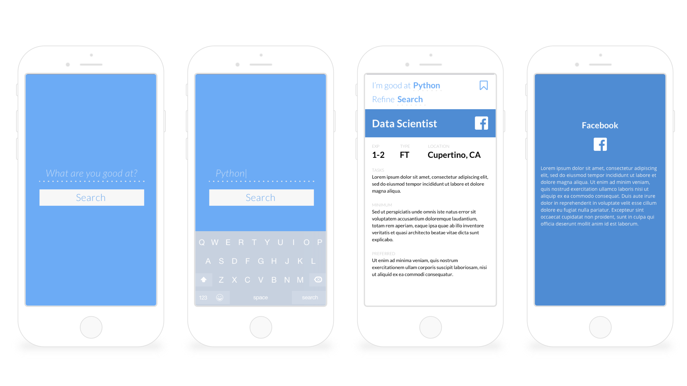

The web has provided easy access to jobs around the globe. While most of these career portals work well on an institutional level, candidates searching for a specific position sometimes struggle to find work that fits their profile. In the tech industry, for example, someone with years of experience in Java searching for a Software Engineering role will get results that may include positions requiring other programming languages that one may not be familiar with. Someone who only looks for engineering positions may also miss the opportunity of getting shown Data Science jobs that one may not have known existed. The way we do search therefore must reflect the way we get, at the very least, the first-interview – through a skill-based search method.
The prototype shows the basic interaction flow. Each job is shown per page instead of listing all items in full, which presents a good overview of the job in a legible layout. Tapping the screen more than a second shows the company profile. Swiping up bookmarks the job that can be accessed later in another section. The copy in the advanced search option also puts a more human touch to the design as opposed to just relying on the typical dropdown options.